레벨 테스트
★ 처음 시작할 때 아이가 알아듣는 말과 직접 말할 수 있는 범위를 살펴보고, 그 결과에 맞는 첫 활동 단계와 연습 순서를 정합니다.
★ 시작 확인에서는 소리, 낱말, 문장, 상황 표현의 네 영역을 차례로 살펴봅니다.
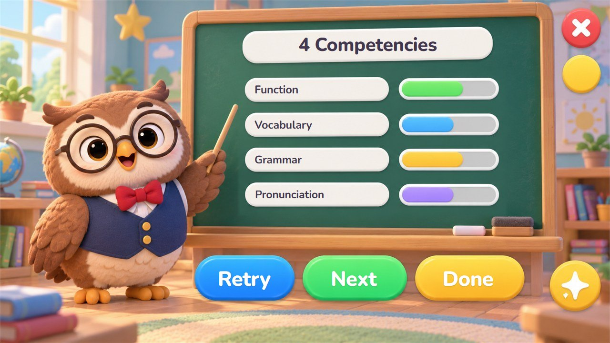
★ 답변에 맞춰 다음 문항의 난도가 달라지는 CAT(Computerized Adaptive Test) 방식으로 이어집니다.
★ 확인 결과는 첫 학습 단계를 고르는 참고 자료로 사용합니다.
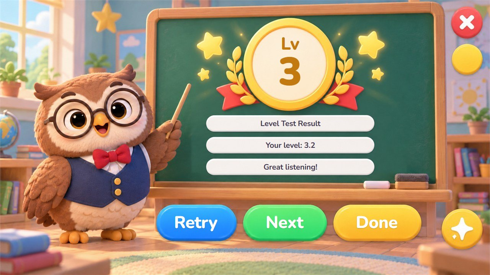
[시작 수준 확인 순서]
1. Preparation · 화면 익히기
◇ 실제 활동과 같은 화면을 먼저 보여 주어 조작과 답변 방식에 익숙해지게 합니다.
◇ 짧은 문장을 듣고 따라 하며 마이크 사용법을 연습합니다.
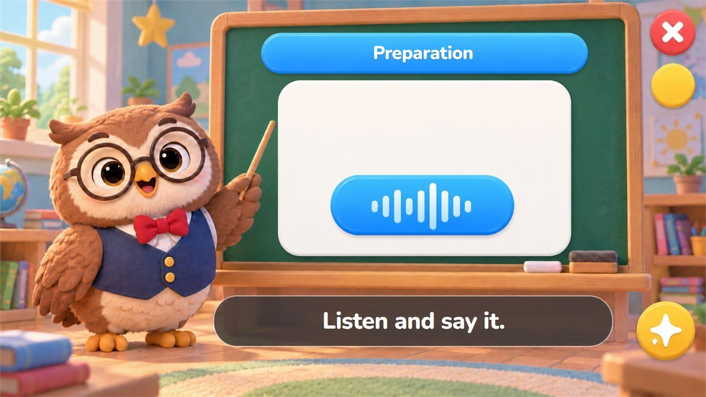
2. Part 1 · 소리 확인
◇ 낱말과 문장의 소리를 또렷하게 내는지 살펴봅니다.
◇ 화면에 나온 표현을 편안한 목소리로 읽어 주세요.
◇ 짧은 문항 다섯 개가 이어집니다.
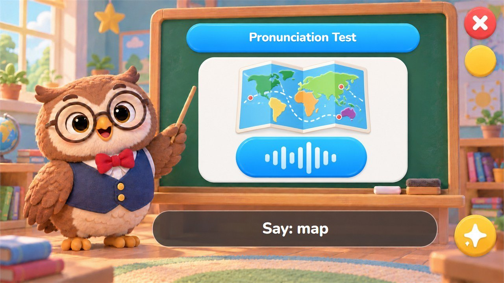
3. Part 2 · 낱말 확인
◇ 알고 있는 낱말의 범위를 확인합니다.
◇ 뜻과 그림을 보고 떠오르는 영어 낱말을 말합니다.
◇ 짧은 문항 다섯 개가 이어집니다.
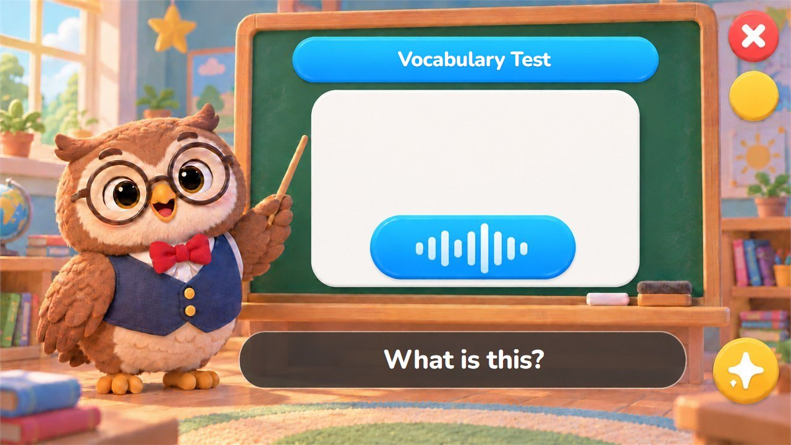
4. Part 3 · 문장 만들기
◇ 낱말을 자연스러운 순서로 잇는 힘을 살펴봅니다.
◇ 뜻을 확인한 뒤 영어 조각을 순서대로 놓아 한 문장을 완성합니다.
◇ 짧은 문항 다섯 개가 이어집니다.
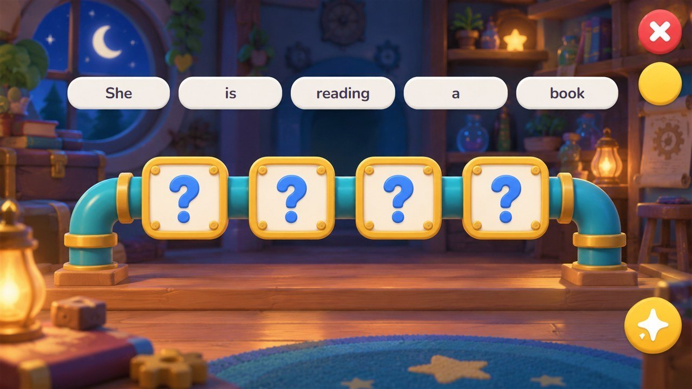
5. Part 4 · 상황에 답하기
◇ 마지막에는 질문의 의도를 듣고 알맞게 답할 수 있는지 확인합니다.
◇ 질문을 끝까지 듣고 자신의 답을 영어로 말합니다.
◇ 짧은 문항 다섯 개가 이어집니다.
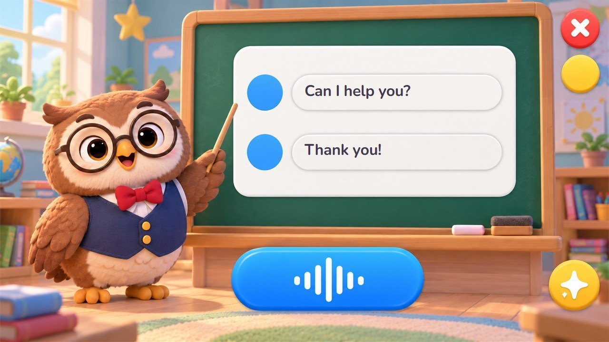
[시작 확인을 나중에 하기]
◇ 낯선 확인 활동이 부담스러우면 추천 단계를 직접 골라 먼저 시작할 수 있습니다.
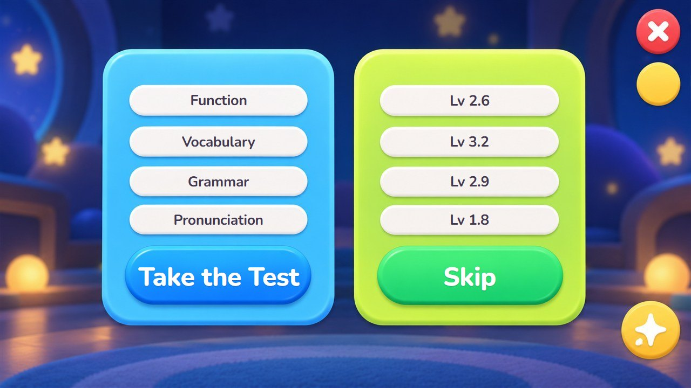
◇ 단계별 설명을 읽고 아이에게 편안해 보이는 구간을 선택해 주세요.
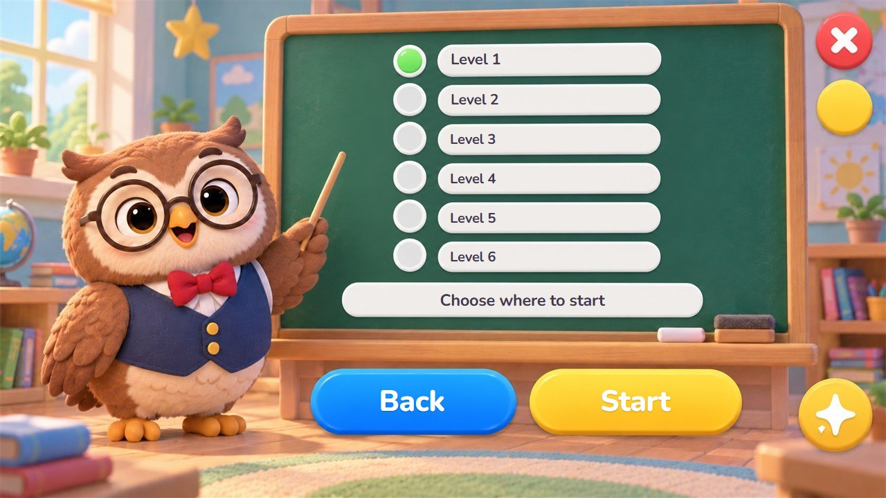
◇ 시작 확인을 마치면 현재 범위에 가까운 활동부터 제안받을 수 있습니다.
대화 방법
화면에 말풍선이 나타난 뒤 마이크가 켜지면 답할 수 있습니다.
편하게 말하는 방법
☆ 기기와 너무 멀지 않은 곳에서 평소보다 또렷하게 말해 주세요.
마이크 방식은 사용하는 기기와 앱 버전에 따라 다르게 보일 수 있습니다.
☆ 답을 생각할 시간이 더 필요하면 화면 위 마이크 설정을 Manual · 직접 누르기로 변경한 뒤 천천히 답해 보세요.
☆ 직접 누르기 방식에서는 마이크 단추를 누른 채 말하고, 답을 마친 다음 손을 떼어 녹음을 끝냅니다.
캐릭터의 말을 놓쳤다면 다시 듣기 단추나 짧은 요청 표현을 이용해 보세요.
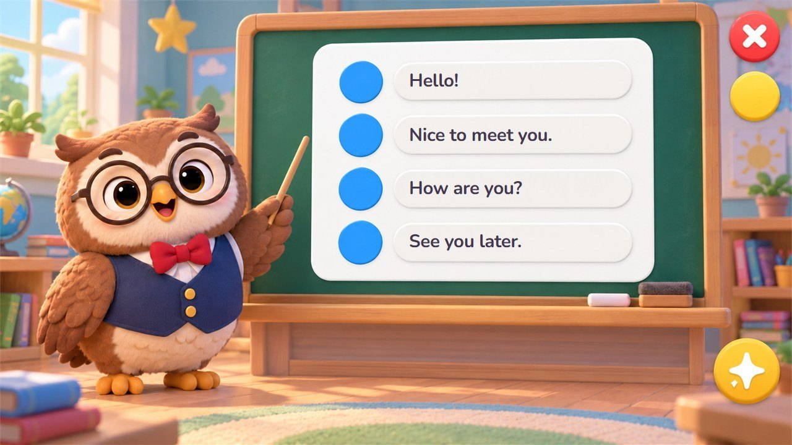
대화를 돕는 기능
낱말을 문장으로 이어 봐요
▷ 한 낱말로 답하면 자연스러운 문장 예시를 함께 보여 줍니다.
어색한 문장은 다시 살펴봐요
▷ 문장 순서가 어색할 때 뜻에 맞는 다른 표현을 제안합니다.
정답을 걱정하기보다 먼저 말해 봐요
▷ 뜻이 통하면 대화를 이어 가고, 더 자연스러운 낱말이나 소리가 필요할 때만 예시를 덧붙입니다.
떠오른 생각은 짧게라도 표현해요
▷ 짧은 답부터 시작해도 괜찮습니다. 캐릭터의 다음 질문을 듣고 한 문장씩 길이를 늘려 보세요.
말하기 도움 문장
피코링고 캐릭터와 이야기할 때
▷ 상황에 맞는 답을 떠올릴 수 있도록 여러 문장 예시를 제시합니다.
어떻게 답할지 바로 떠오르지 않을 때
▷ 도움 문장을 함께 살펴예시를 골라 읽으며 다음 대화를 이어 갈 수 있습니다.
도움 문장을 여는 방법
▷ 마이크 표시 옆의 문장 도움 단추를 누르면 현재 장면과 단계에 맞는 답변 예시가 열립니다.
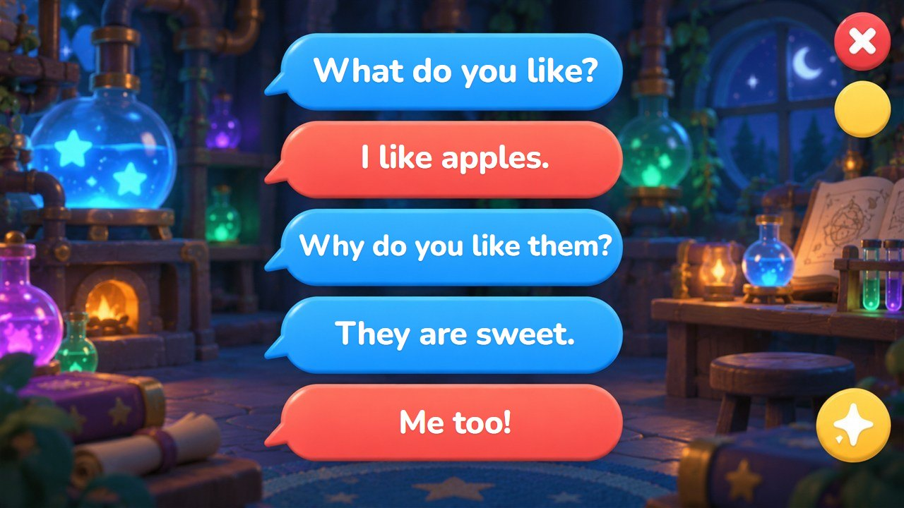
문장으로 답하기
문장 답변 기록
▷ 캐릭터와 이야기하며 문장 답변을 시도하면 활동 기록에 대화 배지가 남아 아이가 시도한 과정을 확인할 수 있습니다.
한 문장으로 말해 보기
▷ 장면의 흐름에 맞고 뜻이 분명한 짧은 문장부터 직접 말해 보기를 권합니다.
내가 한 말 돌아보기
▷ 대화를 마친 뒤 아이가 말한 문장을 다시 살펴볼 수 있습니다.
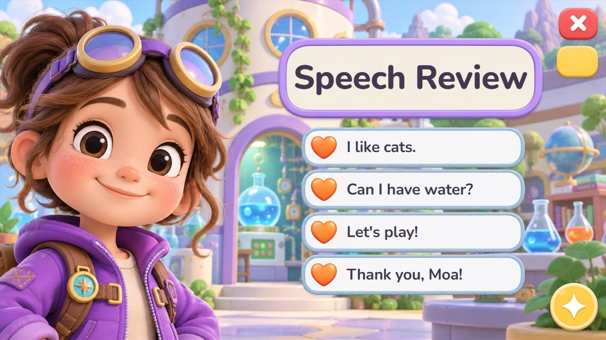
오늘의 활동 제안
피코링고는 소리·낱말·문장·상황 표현을 고르게 경험하도록 오늘의 활동 제안목록을 보여 줍니다.
활동 제안은 최근 기록을 바탕으로 다음 두 가지 기준을 함께 살핍니다.
① 덜 연습한 영역 다시 만나기
→ 네 영역의 활동 횟수를 비교해 경험이 적은 유형을 먼저 보여 줍니다.
② 같은 활동만 반복하지 않기
→ 최근에 열지 않은 장면을 섞어 여러 방식으로 말해 보게 합니다.
오늘의 활동 화면
▷ 첫 단계에서는 시작할 때 다섯 가지 활동 후보를 한눈에 볼 수 있습니다.
▷ 두 번째 단계부터는 시작할 때 일곱 가지 활동 후보를 한눈에 볼 수 있습니다.
▷ 제안 목록은 하루가 바뀔 때새 기록을 반영해 다시 구성됩니다.
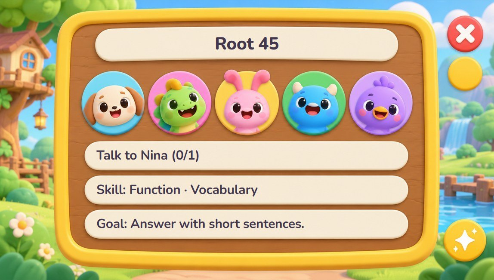

▷ 활동 아이콘을 누르면 아래쪽에서 목표와 진행 방법을 미리 확인할 수 있습니다.
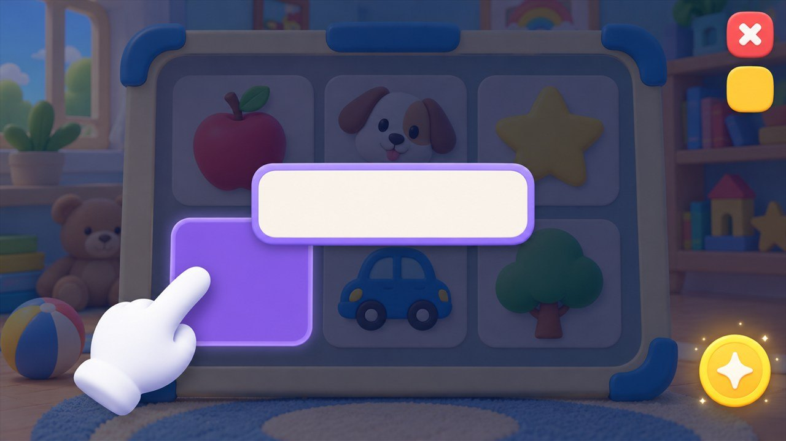
▷ 제안 순서를 참고하되, 아이가 관심 있는 활동을 직접 골라도 학습 기록은 동일하게 쌓입니다.
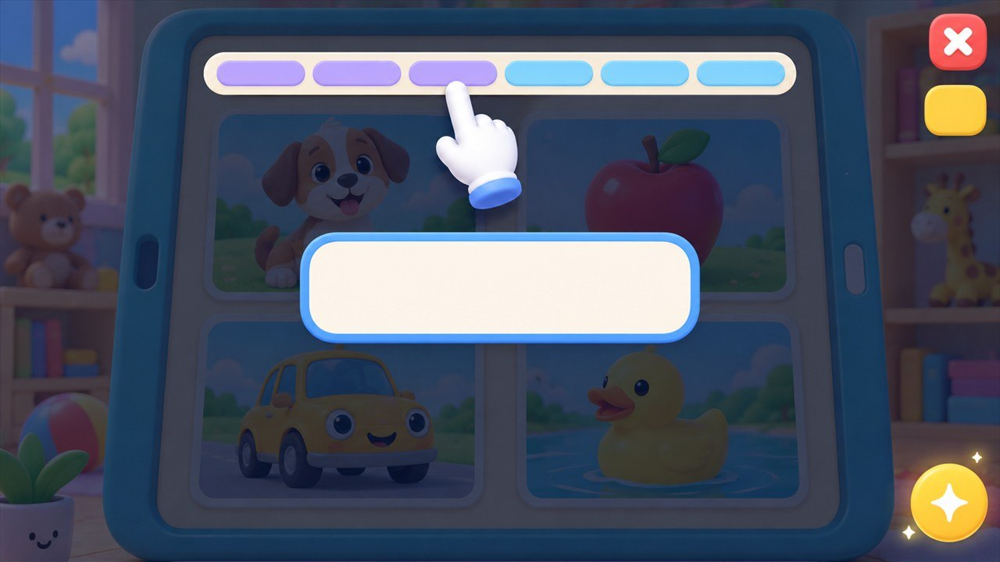
피코링고의 활동에는 아이의 최근 답변에 맞춰 범위를 바꾸는 Adaptive Curriculum학습 경로가 적용됩니다.
★ 대화 활동: 현재 단계에 따라 질문 길이와 도움 문장이 달라집니다.
★ 다른 활동: 익힌 낱말과 문장 범위 안에서 문제 구성이 달라집니다.
학습 결과
▷ 활동을 마치면 이번 기록을 요약한 화면이 열립니다.
▷ 아이가 이번에 남긴 링고 단계기록을 항목별로 확인할 수 있습니다.
▷ 연습한 표현을 네 영역으로 나눠 보여 줍니다.
▷ 각 영역별 진행 단계 변화도 함께 살펴볼 수 있습니다.
[일반 단계 활동 기록]
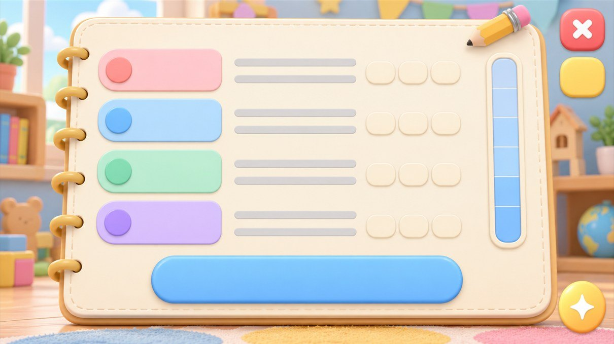
★ 상황 표현: 오늘 사용한 말의 뜻과 대표 문장을 보여 줍니다.
★ 낱말: 이번 주제와 새로 만난 단어를 모아 보여 줍니다.
★ 문장: 익힌 문장 틀과 실제로 답한 예시를 확인합니다.
★ 소리: 녹음 상태와 또렷하게 들린 낱말, 다시 연습할 낱말을 함께 표시합니다.
[첫 단계 활동 기록]
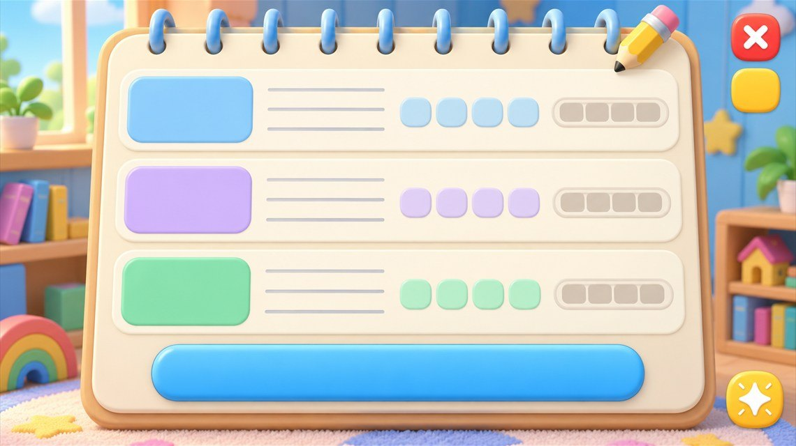
★ 낱말: 이번 주제와 새로 만난 단어를 모아 보여 줍니다.
★ 문장과 표현: 오늘의 말하기 틀을 대표 문장과 함께 확인합니다.
★ 소리 규칙: 연습한 소리와 그 소리가 들어간 낱말을 함께 보여 줍니다.
다음 단계 확인
★ 두 번째 단계 이상의 아이는 활동 기록이 충분히 쌓이면 다음 단계 확인을 만나게 됩니다.
★ 단계 확인을 마친 뒤에 다음 범위의 활동이 열립니다.
★ 익숙한 활동을 더 이어 가고 싶다면 확인을 잠시 미룰 수 있습니다.
놀이처럼 만나는 단계 확인
★ 시험처럼 느끼지 않도록 Level Up Challenge를 짧은 게임 장면으로 구성했습니다.
→ 활동을 마치면 링고 단계가 '0.1'만큼 올라갑니다.
→ 아직 어려우면 익숙한 활동을 더 해 본 뒤 다시 확인할 수 있습니다.
단계 확인의 구성
★ 소리·낱말·문장·상황 표현을 함께 살피도록 길 찾기, 문 열기, 캐릭터 돕기 같은 장면을 섞었습니다.
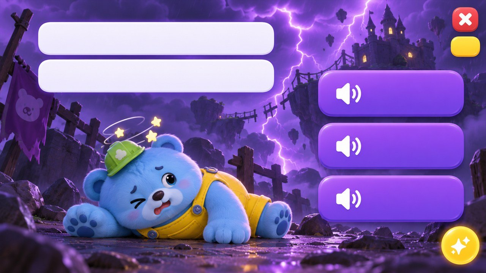
♤ 링고 단계가 오를 때마다 피코섬의 링고 트리(Lingo Tree)모습도 한 부분씩 달라집니다.
♤ 링고 트리를 누르면 현재 단계와 남은 활동을 언제든 확인할 수 있습니다.
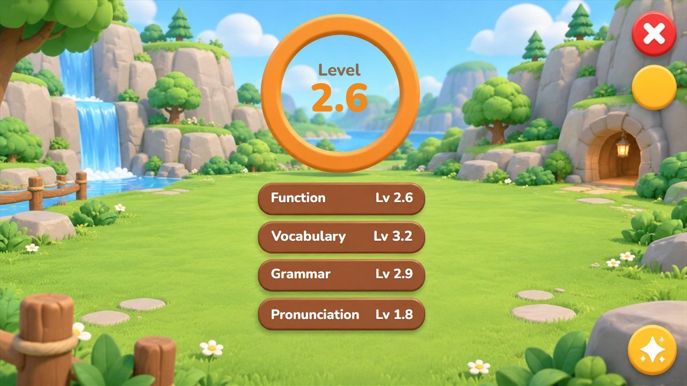